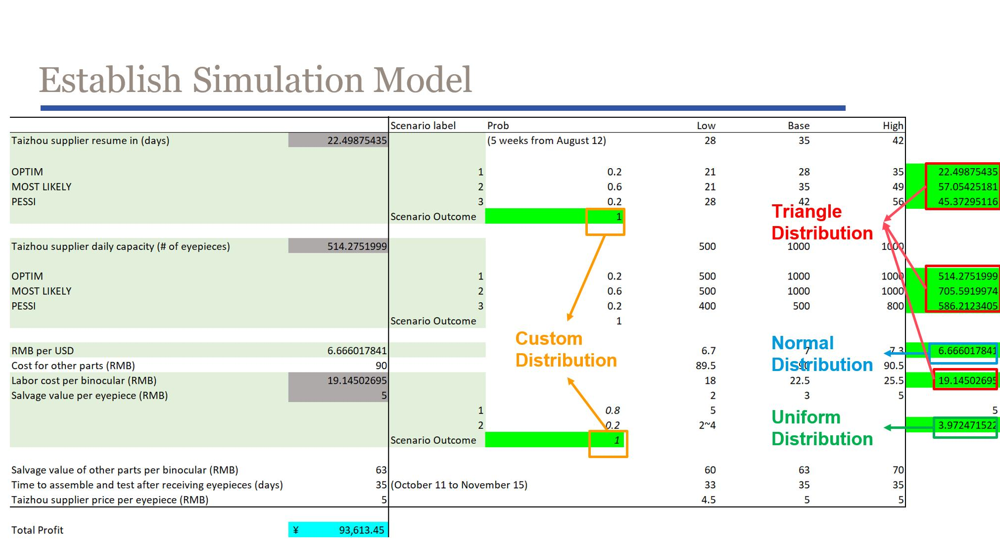

Decison Modeling: Monte Carlo Simulation
My team used Monte Carlo simulation in Excel to develop a model for a factory production plan based on real data. Our goal was to determine the optimal procurement plan for maximizing profits in the event of a stoppage in raw material production due to flooding, with an unknown resumption date. We considered factors such as risk impact on profitability and long-term goals, and used Triangle Distribution, Normal Distribution, and Uniform Distribution models to estimate the likelihood of different scenarios. By combining the results, we arrived at the final results for each factor.
We then created an overlay chart using a data table of 33 levels of quantity to be simulated and used preliminary statistical estimates and recommendations to display ideal decisions under different expected values with acceptable risks. Finally, using utility analysis, we estimated risk tolerance and found the best order quantity, taking into account the company's different levels of risk tolerance.
Overall, our approach enabled better-informed decision-making and improved business outcomes by minimizing risk and maximizing profitability. We were able to provide the company with actionable recommendations for procurement planning in the event of unexpected disruptions, which could ultimately help them stay competitive and successful in the marketplace.